أسئلة امتحانات الثانوية العامة (الفرع العلمي) من 2017 إلى 2025 مصنفة على هذا الفصل: 38 سؤال اختيار من متعدد و61 سؤال مقالي ومسألة. اضغط على خيار لترى إن كان صحيحاً مع الشرح، وحاول حل المسائل قبل ما تفتح الإجابة.
إذا كان اتجاه التيار الكهربائي بعكس اتجاه سهم القوة الدافعة الكهربائية للمصدر الكهربائي، فما مقدار فرق الجهد بين طرفي المصدر؟
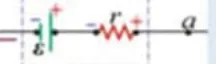
المصدر في حالة شحن: $V=\varepsilon+Ir\gt \varepsilon$
22022 د1 صناعي
إذا كان اتجاه التيار الكهربائي بنفس اتجاه سهم القوة الدافعة الكهربائية للمصدر الكهربائي، فما مقدار فرق الجهد بين طرفي المصدر؟
المصدر في حالة تفريغ: $V=\varepsilon-Ir\lt \varepsilon$
32022 د1 علمي
في الدارة المجاورة، عند غلق المفتاح $(S)$، ماذا يحدث لإضاءة المصباح $(L)$؟
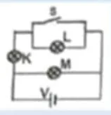
المفتاح المغلق يصنع مساراً مقاومته صفر موازياً للمصباح فيقصره ولا يمر فيه تيار.
42022 د1 صناعي
في الشكل المجاور، ثلاثة مصابيح متماثلة، ماذا يحدث لإضاءة كل من المصباحين $(B,C)$ بعد غلق المفتاح $(S)$؟
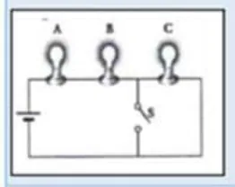
غلق المفتاح يقصر المصباح $C$ فينطفئ، فتقل المقاومة الكلية ويزداد التيار المار في $B$ فتزداد إضاءته.
52021 د1 صناعي
في الدارة الكهربائية المبينة في الشكل المجاور، إذا علمت أن المصابيح متماثلة، والمصابيح $(A,C,D)$ مضاءة والمفتاح $(S)$ مفتوح، إذا أُغلق المفتاح $(S)$ فأي منها تزداد شدة إضاءتها؟
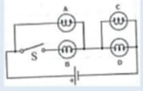
غلق المفتاح يقصر المصباح $A$ وتقل المقاومة الكلية، فيزداد التيار والجهد على $C$ و $D$ فتزداد إضاءتهما.
62021 د1 علمي
يبين الشكل المجاور ثلاثة مصابيح متماثلة، ماذا سيحدث لإضاءة المصباحين $(x)$، $(y)$ عند غلق المفتاح $(S)$؟
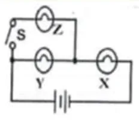
عند غلق المفتاح يتصل المصباح $Z$ على التوازي مع $Y$ فتقل المقاومة الكلية ويزداد التيار الكلي المار في $X$ فتزداد إضاءته، ويقل فرق الجهد على $Y$ فتقل إضاءته.
72021 د1 علمي
في الشكل المجاور ماذا يحدث لقراءة الأميتر عند فتح المفتاح $(s)$؟
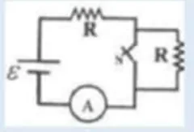
فتح المفتاح يلغي أحد فرعي التوازي فتزداد المقاومة الكلية ويقل التيار.
82021 د2 صناعي
إذا كانت المقاومة المتصلة في الشكل المجاور متساوية، أي الآتية ينشأ أكبر مقدار للمقاومة المكافئة؟
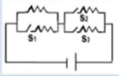
أكبر مقاومة مكافئة عندما تتصل المقاومات على التوالي دون تفرعات موازية.
92021 د2 صناعي
في الدارة الكهربائية المجاورة إذا كانت قراءة الفولتميتر $24$ فولت والمفتاح $(S)$ مغلقاً، فكم تصبح قراءته عند فتح المفتاح؟
في الشكل المجاور يمثل دارة كهربائية أخذت عدة قراءات للفولتميتر والأميتر من خلال تغيير المقاومة $R$، فتم الحصول على العلاقة الخطية في الشكل المجاور، ماذا يمثل ميل المنحنى للخط المستقيم؟
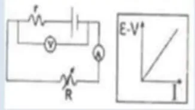
$\varepsilon-V=Ir$ ⇐ الميل $=r$
112021 د1 صناعي
ما الصيغة الرياضية التي تصف فرق الجهد بين قطبي بطارية في حالة شحن؟
في الشحن يدخل التيار من القطب الموجب.
122017 د3
في الشكل المجاور، إذا علمت أن قراءة الفولتميتر بعد إغلاق المفتاح تساوي $\mathrm{(6\,V)}$ فإن قراءته قبل إغلاق المفتاح تساوي بوحدة (الفولت):
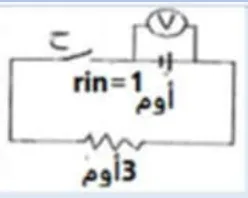
بعد الإغلاق: $I=\dfrac63=2\,\mathrm{A}$ ⇐ $\varepsilon=V+Ir=6+2(1)=8\,\mathrm{V}$، وقبل الإغلاق لا يمر تيار فيقرأ الفولتميتر $\varepsilon$
132020 د2
بطارية تخزين، قوتها الدافعة الكهربائية $\mathrm{(20\,V)}$، ومقاومتها الداخلية $(0.2\Omega)$، ما فرق الجهد بين طرفيها عندما تشحن بتيار مقداره $\mathrm{(6\,A)}$، بوحدة الفولت؟
$V=\varepsilon+Ir=20+6(0.2)=21.2\,\mathrm{V}$
142019 د3
في الدارة الكهربائية المجاورة، إذا كانت قراءة الفولتميتر $(V)$ والمفتاح $(S)$ مفتوح تساوي $\mathrm{(3.08\,V)}$، وعند غلق المفتاح تصبح قراءته $\mathrm{(2.97\,V)}$، وقراءة الأميتر $\mathrm{(1.65\,A)}$ فما مقدار المقاومة الداخلية $(r)$ بوحدة الأوم؟
يمثل الشكل المجاور التغيرات في الجهود عبر دارة كهربائية بسيطة فما الهبوط في الجهد الكهربائي عبر البطارية بوحدة الفولت؟
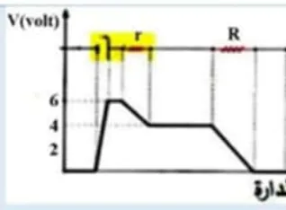
من الشكل: الهبوط عبر المقاومة الداخلية $Ir=8-6=2\,\mathrm{V}$
162020 د1
يمثل الشكل المجاور منحنى التغيرات في الجهد عبر دارة كهربائية بسيطة، ما مقدار المقاومة الخارجية $(R)$ بوحدة الأوم، علماً بأن المقاومة الداخلية $(r)$ تساوي $(1$ أوم$)$؟
يمثل الشكل المجاور جزءاً من دارة كهربائية، شدة التيار المار فيها $\mathrm{(3A)}$، ما مقدار القدرة الداخلة بين النقطتين $(a,b)$ بوحدة الواط؟
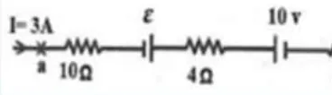
القدرة المستهلكة في المقاومات $I^2R=9\times20=180\,\mathrm{W}$ والقدرة المختزنة في البطارية (تُشحن) $\varepsilon I=30\,\mathrm{W}$ ⇐ المجموع $\mathrm{210\,W}$
182020 د1
في الدارة الكهربائية المجاورة، ما فرق الجهد بين النقطتين $(A,B)$ بوحدة الفولت؟
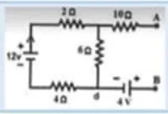
لا يمر تيار في $10\Omega$ (طرف مفتوح). تيار الحلقة: $I=\dfrac{12}{2+6+4}=1\,\mathrm{A}$ $V_A-V_d=1\times6=6\,\mathrm{V}$، والبطارية $\mathrm{4\,V}$ قطبها الموجب نحو $B$ ⇐ $V_B-V_d=4\,\mathrm{V}$ $V_{AB}=6-4=2\,\mathrm{V}$ (مفتاح الإجابة في الملف يذكر (ج) $\mathrm{4\,V}$؛ والحساب من الشكل يعطي $\mathrm{2\,V}$.)
192018 د2
عند إغلاق المفتاح $(s)$ في الشكل المجاور ماذا يحدث لقراءة كل من الأميتر والفولتميتر على الترتيب؟
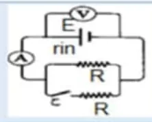
إغلاق المفتاح يضيف مقاومة على التوازي فتقل المقاومة الخارجية ويزداد التيار، فيزداد الهبوط $Ir$ ويقل فرق الجهد الطرفي $V=\varepsilon-Ir$
202019 د1
في الشكل المجاور دارة كهربائية تتكون من أربعة مصابيح متماثلة $(K,M,N,L)$ وبطارية ومفتاح والمصابيح الأربعة تشع ضوءاً، ماذا يحدث لشدة إضاءة $(L)$ عند غلق المفتاح $(S)$؟
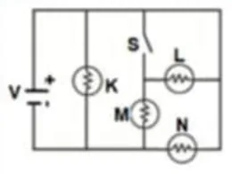
المفتاح المغلق يقصر المصباح $L$ فلا يمر فيه تيار.
212019 د2
يبين الشكل المجاور دارة كهربائية تحوي مصابيح متماثلة ماذا يحدث لإضاءة المصباح $(b)$ عند إغلاق المفتاح $(S)$؟
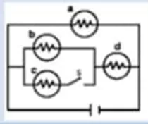
غلق المفتاح يضيف مصباحاً على التوازي مع $b$، فيقل فرق الجهد على $b$ وتقل إضاءته.
222020 د3
الدارة الكهربائية المبينة في الشكل المجاور تحتوي على أربعة مصابيح متماثلة، أي من هذه المصابيح شدة إضاءته هي الأعلى؟
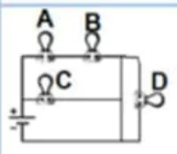
المصباح $C$ يمر فيه التيار الكلي للدارة، بينما يتجزأ التيار بين المصابيح الأخرى الموصولة على التوازي، فيكون $C$ الأعلى إضاءة.
232023 د1
يبين الشكل المجاور خمسة مصابيح متماثلة في ثلاث دارات كهربائية، وصلت مع بطاريات متماثلة مقاومتها الداخلية مهملة. ما الترتيب التصاعدي للدارات الكهربائية وفق قراءة الأميتر $(A)$ في كل منها؟
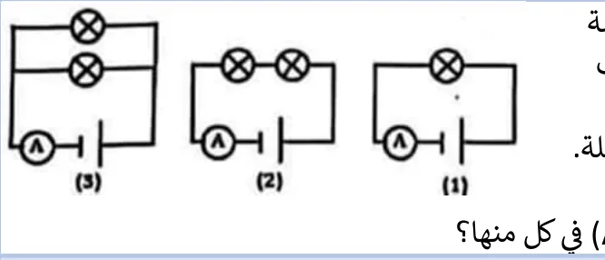
(1): مصباح واحد $I=\frac{\varepsilon}{R}$، (2): مصباحان على التوالي $I=\frac{\varepsilon}{2R}$، (3): مصباحان على التوازي $I=\frac{2\varepsilon}{R}$ ⇐ $I_3\gt I_1\gt I_2$
242023 د1
في الشكل المجاور، ما مقدار المقاومة المكافئة بين النقطتين $(a,b)$؟
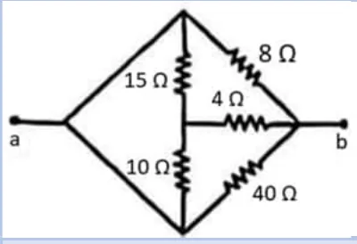
النقطة $a$ متصلة بسلكين بالرأسين العلوي والسفلي، فتصبح: $8\Omega$ و $40\Omega$ بين $a$ و $b$ مباشرة، والمسار $(15\parallel10)+4=6+4=10\,\Omega$ $\dfrac1R=\dfrac18+\dfrac1{40}+\dfrac1{10}=\dfrac{10}{40}$ ⇐ $R=4\,\Omega$
252023 د2
في الدائرة الكهربائية المجاورة، إذا احترقت فتيلة أحد المصباحين المتماثلين، ماذا يحدث لقراءة الفولتميتر؟
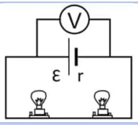
احتراق الفتيلة يفتح الدارة فينعدم التيار، فيقرأ الفولتميتر القوة الدافعة $V=\varepsilon$ (أكبر من $\varepsilon-Ir$).
262023 د2
في الدارة الكهربائية المبينة في الشكل المجاور، إذا علمت أن قدرة المقاومة $(4\,\Omega)$ تساوي $\mathrm{(16\,W)}$، فما فرق الجهد بين النقطتين $(a,b)$ بوحدة (الفولت)؟
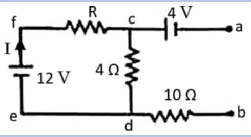
$I^2(4)=16$ ⇐ $I=2\,\mathrm{A}$ ⇐ $V_{cd}=8\,\mathrm{V}$. لا يمر تيار في $10\Omega$. $V_{ab}=V_{ac}+V_{cd}+V_{db}=-4+8+0=4\,\mathrm{V}$
272023 استكمالية
يُمثّل الشكل المجاور جزءاً من دارة كهربائية يسري فيها تيار كهربائي مقداره $\mathrm{(2\,A)}$، فما جهد النقطة $(a)$ بوحدة (الفولت)؟
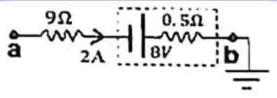
$V_a-V_b=2(9)+2(0.5)-8=11\,\mathrm{V}$ و $V_b=0$ (مؤرضة) ⇐ $V_a=11\,\mathrm{V}$
282024 د1
ماذا يحدث لمقدار القدرة المستنفدة في الدارة المجاورة عند غلق المفتاح $(S)$؟
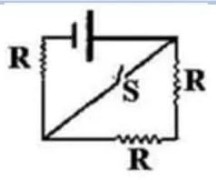
غلق المفتاح يقصر جزءاً من المقاومات فتقل المقاومة الكلية ويزداد التيار ⇐ $P=\dfrac{\varepsilon^2}{R}$ تزداد.
292024 د1
الشكل المجاور يمثل جزءاً من دارة كهربائية، ما قيمة $(V_{ab})$ بوحدة الفولت؟
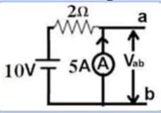
الأميتر المثالي مقاومته صفر وهو موصول بين $a$ و $b$ ⇐ $V_{ab}=IR_A=0$
302024 د2
في الشكل المجاور، دارة كهربائية تحتوي مصابيح متماثلة، أي من هذه المصابيح تزداد شدة إضاءته عند إغلاق المفتاح $(s)$؟
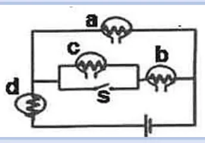
غلق المفتاح يقصر جزءاً من الدارة فتقل المقاومة الكلية ويزداد التيار الكلي، فتزداد إضاءة المصباحين اللذين يمر فيهما التيار الكلي $(b,d)$.
312024 د2
ما مقدار المقاومة المكافئة لمجموعة المقاومات الموصولة بين النقطتين $(a,b)$ في الشكل المجاور، بوحدة الأوم؟
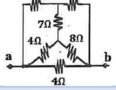
قنطرة متزنة: $\dfrac24=\dfrac48$ فلا يمر تيار في $7\,\Omega$ المسار العلوي $2+4=6$، والأوسط $4+8=12$، والسفلي $4$ ⇐ $6\parallel12=4$ ثم $4\parallel4=2\,\Omega$
322024 استكمالية
بطارية تخزين قوتها الدافعة الكهربائية $(\varepsilon=25\,\mathrm{V)}$، ومقاومتها الداخلية $(r=0.2\,\Omega)$. ما مقدار فرق الجهد بين طرفيها عندما تشحن بتيار قدره $\mathrm{(8\,A)}$؟
$V=\varepsilon+Ir=25+8(0.2)=26.6\,\mathrm{V}$
332024 استكمالية
يمثل الشكل المجاور جزءاً من دائرة كهربائية، فكم تكون قراءة الأميتر بوحدة الأمبير؟
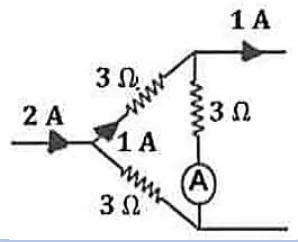
من قانون كيرشوف الأول عند العقد: التيار الداخل $\mathrm{2A}$ يخرج منه $\mathrm{1A}$ من الأعلى، ويمر $\mathrm{1A}$ في الفرع الأوسط، فلا يتبقى تيار يمر في فرع الأميتر.
342025 د1
في الشكل المجاور ما مقدار المقاومة المكافئة بين النقطتين $(a,b)$ بوحدة أوم؟
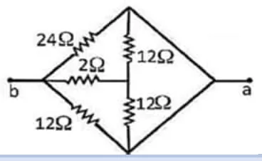
قنطرة متزنة $\left(\dfrac{24}{12}=\dfrac{12}{6}\right)$ أو بحسب الشكل؛ لا يمر تيار في المقاومة الوسطى ⇐ $R_{ab}=4\,\Omega$
352025 د1
يبين الشكل أربع مصابيح متماثلة، إذا انقطع فتيل المصباح $(3)$ فأي الآتية صحيح؟
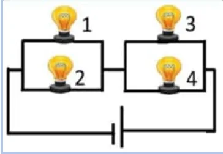
قبل: $(1\parallel2)$ و $(3\parallel4)$ على التوالي ⇐ لكل مجموعة $\frac{\varepsilon}{2}$ بعد انقطاع 3: المجموعة الثانية مقاومتها $R$ والأولى $\frac R2$ ⇐ جهد المصباح 4 يصبح $\frac{2\varepsilon}{3}$ (يزداد)، وجهد 1 و 2 يصبح $\frac{\varepsilon}{3}$ (يقل).
362025 د1
في الدارة الكهربائية المجاورة، إذا كانت قراءة الفولتميتر $\mathrm{(24\,V)}$ والمفتاح $(s)$ مغلقاً، فكم تصبح قراءته عند فتح المفتاح؟
في الدارة الكهربائية المجاورة، إذا كانت قراءة الفولتميتر $(V)$ تساوي $(20)$ فولت، فما قراءة الأميتر $(A)$؟
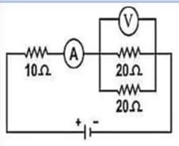
الفولتميتر على مجموعة $(20\parallel20)=10\,\Omega$ ⇐ $I=\dfrac{20}{10}=2\,\mathrm{A}$
382025 د2
في الدارة الكهربائية المبينة في الشكل المجاور إذا كانت القدرة المستنفذة في المقاومة $R_1$ تساوي $\mathrm{(20\,W)}$، بإهمال المقاومة الداخلية للقوة الدافعة الكهربائية، فما مقدار المقاومة $(R_2)$؟
مقدار النقص في الجهد عن القوة الدافعة الكهربائية بمقدار يساوي جهد المقاومة الداخلية $(Ir)$ في المصدر غير المثالي والدارة مغلقة.
22022 د2 صناعي
وضح المقصود بقولنا: أن القوة الدافعة الكهربائية $=5$ فولت.
أظهر الإجابة
أي أن قراءة الفولتميتر بين طرفي المصدر والدارة مفتوحة تساوي $\mathrm{5\,V}$، وأن الشغل الذي تبذله البطارية لنقل وحدة الشحنات الموجبة (1 كولوم) من القطب السالب إلى الموجب داخل البطارية يساوي $\mathrm{5\,J}$.
32021 د2 صناعي
ما المقصود القوة الدافعة الكهربائية تساوي $2$ فولت؟
أظهر الإجابة
أن الشغل الذي تبذله البطارية لنقل شحنة مقدارها $\mathrm{1\,C}$ من القطب السالب إلى الموجب داخلها يساوي $\mathrm{2\,J}$ (وهي قراءة الفولتميتر بين قطبيها والدارة مفتوحة).
42021 د1
ما المقصود بالقوة الدافعة الكهربائية لبطارية ما تساوي $9$ فولت؟
أظهر الإجابة
أن الشغل الذي تبذله البطارية لنقل $\mathrm{1\,C}$ من الشحنة الموجبة من القطب السالب إلى الموجب داخلها يساوي $\mathrm{9\,J}$.
52020 د1 و2025
القوة الدافعة الكهربائية
أظهر الإجابة
الشغل الذي يبذله المصدر لنقل وحدة الشحنات الموجبة من القطب السالب إلى القطب الموجب داخل المصدر: $\varepsilon=\dfrac{W}{q}$، وتساوي فرق الجهد بين قطبيه والدارة مفتوحة.
62023 د2
القوة الدافعة الكهربائية تساوي $\mathrm{(12\,V)}$.
أظهر الإجابة
أن الشغل الذي يبذله المصدر لنقل $\mathrm{1\,C}$ من الشحنة الموجبة من القطب السالب إلى الموجب داخله يساوي $\mathrm{12\,J}$.
السؤال الثاني (ب): علّل لما يلي
12022 د1 علمي
القدرة المستنفذة في المقاومات الخارجية أقل من القدرة الناتجة من البطارية.
أظهر الإجابة
لأن جزءاً من القدرة الناتجة يُستهلك داخل البطارية نفسها في مقاومتها الداخلية $(I^2r)$.
22018 د1
قراءة الفولتميتر الموصول بين قطبي البطارية في دارة مغلقة قد تكون أكبر أو أقل من قوتها الدافعة الكهربائية.
أظهر الإجابة
تكون أقل في حالة التفريغ $(V=\varepsilon-Ir)$ لأن التيار يخرج من القطب الموجب، وتكون أكبر في حالة الشحن $(V=\varepsilon+Ir)$ لأن التيار يدخل من القطب الموجب.
32019 د2
يهبط فرق الجهد بين طرفي بعض البطاريات عنه عندما كانت مفتوحة.
أظهر الإجابة
بسبب وجود مقاومة داخلية للبطارية يُستهلك فيها جزء من الجهد $(Ir)$ عند مرور التيار.
42023 د1
قياس مقدار مقاومة مجهولة باستخدام قانون أوم يكون أقل دقة من استخدام قنطرة ويتستون.
أظهر الإجابة
لأن الأميتر والفولتميتر لهما مقاومة داخلية تؤثر على قيم التيار والجهد في الدارة، بينما قنطرة ويتستون تعتمد على انعدام التيار في الجلفانوميتر (حالة الاتزان) فلا تتأثر بمقاومة أجهزة القياس.
52023 استكمالية
يستهلك جزء من القدرة التي تنتجها البطارية داخل البطارية نفسها.
أظهر الإجابة
بسبب وجود المقاومة الداخلية للبطارية، فيتحول جزء من الطاقة إلى حرارة داخلها بمعدل $I^2r$.
62025 د1
قياس مقدار مقاومة مجهولة باستخدام قنطرة ويتستون أكثر دقة من استخدام قانون أوم.
أظهر الإجابة
لأن القنطرة تعتمد على حالة الاتزان (انعدام التيار في الجلفانوميتر) فلا تتأثر بالمقاومات الداخلية لأجهزة القياس، بخلاف قياس $V$ و $I$ بالأميتر والفولتميتر.
72025 د2
لتقليل نسبة الخطأ في قياس مقاومة مجهولة باستخدام قانون أوم، يستخدم فولتميتر مقاومته كبيرة جداً بالنسبة لمقدار المقاومة المجهولة.
أظهر الإجابة
حتى يكون التيار المار في الفولتميتر صغيراً جداً (مهملاً)، فتكون قراءة الأميتر مساوية تقريباً للتيار المار في المقاومة المجهولة.
السؤال الثاني (ج، د): قارن، وضّح
12022 د2 صناعي
قارن بين البطارية في حالة الشحن وفي حالة التفريغ من حيث اتجاه التيار المار فيها.
أظهر الإجابة
التفريغ: يخرج التيار من القطب الموجب (بنفس اتجاه سهم $\varepsilon$) و $V=\varepsilon-Ir$ الشحن: يدخل التيار من القطب الموجب (بعكس اتجاه سهم $\varepsilon$) و $V=\varepsilon+Ir$
22022 د2 علمي وصناعي
وضّح ماذا يحدث لشدة إضاءة المصباح $(C)$ عند إغلاق المفتاح $(S)$ في الدارة الكهربائية المجاورة التي تحتوي مصابيح متماثلة.
في الدارة الكهربائية المجاورة، جد: (1) شدة التيار الكهربائي المار في كل بطارية (2) جهد النقطة $(a)$
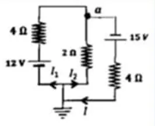
أظهر الإجابة
الإجابة النهائية: (1) $I_1=3.18\,\mathrm{A}$، $I_2=0.375\,\mathrm{A}$، $I=3.56\,\mathrm{A}$ (2) $V_a=0.75\,\mathrm{V}$ الطريقة: طبّق قانون كيرشوف الأول عند العقدة وقانون كيرشوف الثاني على حلقتين، ثم احسب الجهد من النقطة المؤرضة.
22022 د1 علمي وصناعي
في الشكل المجاور، إذا علمت أن قراءة الجلفانوميتر $(G)$ تساوي صفراً، أحسب: (1) مقدار المقاومة $(R)$ (2) المقاومة المكافئة بين $(a,b)$
إذا مُثلت التغيرات في الجهد عبر الدارة الكهربائية البسيطة المبينة في الشكل بالرسم البياني المجاور لها، بالاعتماد على المعلومات المثبتة على كل منهما احسب مقدار كل من: (1) القوة الدافعة الكهربائية $(\varepsilon)$ (2) قراءة الفولتميتر $(V)$ (3) المقاومة المجهولة $(R)$
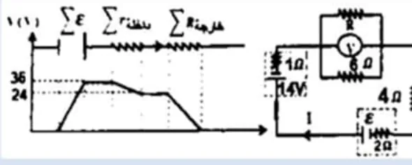
أظهر الإجابة
الإجابة النهائية: (1) $\varepsilon=50\,\mathrm{V}$ (2) $V=8\,\mathrm{V}$ (3) $R=3\,\Omega$ الطريقة: من الرسم البياني اقرأ الارتفاع الكلي (مجموع القوى الدافعة) والهبوط في المقاومات الداخلية، فتحسب التيار ثم باقي المقادير.
42022 د1 صناعي
يمثل الشكل المجاور دارة كهربائية، معتمداً على البيانات المثبتة عليه، أحسب: (1) شدة التيار المار $(I_3)$ (2) القوة الدافعة الكهربائية $(\varepsilon)$ (3) فرق الجهد الكهربائي $(V_{ab})$ عبر المسار الأوسط
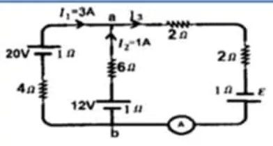
أظهر الإجابة
(1) كيرشوف الأول عند $a$: $I_3=I_1+I_2=3+1=4\,\mathrm{A}$ الإجابة النهائية: (2) $\varepsilon=15\,\mathrm{V}$ (3) $V_{ab}=5\,\mathrm{V}$
52022 د1 صناعي
إذا مثلت التغيرات في الجهد عبر الدارة الكهربائية البسيطة المبينة في الشكل بالرسم البياني المجاور لها، بالاعتماد على المعلومات المثبتة على كل منهما احسب مقدار كل من: (1) القوة الدافعة الكهربائية $(\varepsilon_2)$ (2) تيار الدارة $(I)$ (3) المقاومة المجهولة $(R_1)$
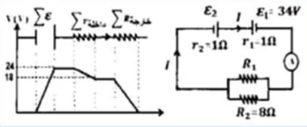
أظهر الإجابة
الإجابة النهائية: (1) $\varepsilon_2=58\,\mathrm{V}$ (2) $I=3\,\mathrm{A}$ (3) $R_1=24\,\Omega$ الطريقة: من الرسم اقرأ الهبوط في المقاومتين الداخليتين $(1+1)\,\Omega$ لتحسب التيار، ثم استخدم ارتفاع الجهد الكلي لإيجاد $\varepsilon_2$، وهبوط الجهد في المقاومات الخارجية لإيجاد $R_1$.
62022 د2 علمي
يمثل الشكل المجاور دارة كهربائية، معتمداً على البيانات المثبتة على الشكل، أحسب: (1) شدة التيار المار $I_3$ (2) قراءة الفولتميتر $V$ (3) فرق الجهد الكهربائي $V_{ab}$ عبر المسار الأوسط
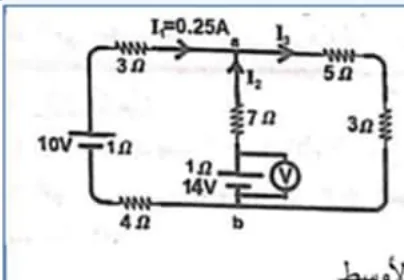
أظهر الإجابة
الإجابة النهائية: (1) $I_3=1\,\mathrm{A}$ (2) $V=13.25\,\mathrm{V}$ (3) $V_{ab}=8\,\mathrm{V}$ الطريقة: كيرشوف الثاني على الحلقة اليسرى يعطي $I_2$، ثم $I_3=I_1+I_2$ عند العقدة $a$.
72022 د2 علمي
في الشكل المجاور، بالاعتماد على البيانات المثبتة على الشكل أثبت أن: $V_A=V_B=V_C$
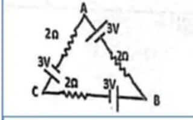
أظهر الإجابة
$I=\dfrac{\Sigma\varepsilon}{\Sigma R}=\dfrac{9}{6}=1.5\,\mathrm{A}$ من $A$ إلى $B$: $V_A-1.5(2)+3=V_B$ ⇐ $V_A=V_B$ ومن $B$ إلى $C$ بالمثل: $V_B-3+3=V_C$ ⇐ $V_A=V_B=V_C$
82022 د2 علمي
يمثل الرسم المجاور جزءاً من دارة كهربائية، اعتماداً على القيم المثبتة على الشكل، أحسب: (1) قراءة الأميتر $(A)$ (2) القدرة الداخلة بين النقطتين $(c,a)$
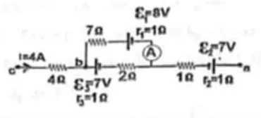
أظهر الإجابة
الإجابة النهائية: (1) $\mathrm{1\,A}$ (2) $P_{داخلة}=160\,\mathrm{W}$ و $V_{ca}=33\,\mathrm{V}$
92022 د2 صناعي
يمثل الشكل المجاور جزءاً من دارة كهربائية، مستعيناً بالبيانات المثبتة على الشكل، أحسب: (1) مقدار شدة التيار $(I)$ (2) القدرة المستنفذة في المقاومة $(8\Omega)$
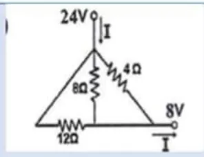
أظهر الإجابة
الإجابة النهائية: (1) $I\approx7.3\,\mathrm{A}$ (2) $P=64\,\mathrm{W}$ الطريقة: احسب فرق الجهد بين طرفي المقاومة $8\Omega$ من المسار الذي يحوي البطاريتين، ثم $P=\dfrac{V^2}{R}$.
102022 د2 صناعي
في الدارة الكهربائية المجاورة أوجد شدة التيارات $(I_1,I_2,I_3)$
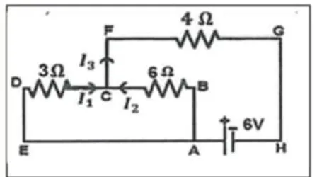
أظهر الإجابة
الإجابة النهائية: $I_1=0.67\,\mathrm{A}$، $I_2=0.33\,\mathrm{A}$، $I_3=1\,\mathrm{A}$ الطريقة: المقاومتان $3\Omega$ و $6\Omega$ متصلتان على التوازي (طرفاهما $C$ و $E$/$A$)، و $4\Omega$ على التوالي معهما.
112022 د2 صناعي
يمثل الرسم المجاور جزءاً من دارة كهربائية فإذا علمت أن فرق الجهد $(V_{dc}=12\,\mathrm{V)}$، اعتماداً على القيم المثبتة على الشكل، أحسب: (1) قراءة الأميتر $(A)$ (2) القوة الدافعة الكهربائية $(\varepsilon_3)$ (3) فرق الجهد الكهربائي $(V_{ab})$
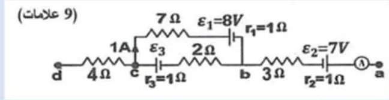
أظهر الإجابة
الإجابة النهائية: (1) $I=3\,\mathrm{A}$ (2) $\varepsilon_3=10\,\mathrm{V}$ (3) $V_{ab}=-5\,\mathrm{V}$ الطريقة: من $V_{dc}=12\,\mathrm{V}$ عبر المقاومة $4\Omega$ تُحسب شدة التيار، ثم يُطبق قانون كيرشوف الأول عند $c$ وتتبع تغيرات الجهد عبر المسار.
122021 د1 علمي وصناعي
عند تمثيل التغيرات في الجهد عبر الدارة الكهربائية المبينة في الشكل رقم (1) نتج الرسم البياني الظاهر في الشكل رقم (2)، باعتماد القيم المثبتة على كلا الشكلين، جد: (1) مقدار القوة الدافعة الكهربائية للبطارية (2) قراءة الأميتر $(A)$ (3) قيمة المقاومة المجهولة $R$
يبين الشكل المجاور دارة كهربائية متصلة بالأرض عند النقطة $e$، إذا علمت أن قراءة الفولتميتر تساوي $21$ فولت احسب: (أ) قيمة المقاومة المجهولة $R$ (ب) جهد النقطة $a$ (ج) القدرة الداخلة في الفرع $abc$
بالاعتماد على الدارة الموضحة في الشكل المجاور، وبإهمال المقاومات الداخلية للبطاريات، أجب عن الآتي: (أ) احسب قراءة الأميتر (ب) أثبت أن القدرة الداخلة خلال الفرع $abc$ تساوي القدرة المستنفذة خلال نفس الفرع.
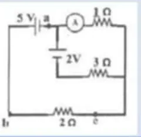
أظهر الإجابة
الإجابة النهائية: (أ) قراءة الأميتر $I_2=1\,\mathrm{A}$ ($I_1=1\,\mathrm{A}$، $I=2\,\mathrm{A}$) (ب) $P_{in}=8\,\mathrm{W}$ و $P_{out}=8\,\mathrm{W}$، وهذا متوقع لأن الفرع يبدأ وينتهي عند نفس الجهد تقريباً (حفظ الطاقة).
162021 د1 علمي و2021 د2 صناعي
يمثل الشكل المجاور جزءاً من دارة كهربائية، أجب عما يلي: (أ) احسب فرق الجهد الكهربائي $V_{ab}$ (ب) احسب القوة الدافعة المجهولة (ج) ما القدرة المستنفذة في الفرع $ab$؟
يمثل الشكل المجاور دارة كهربائية مغلقة، احسب: (أ) شدة التيار الكهربائي المار في كل بطارية (ب) فرق الجهد بين النقطتين $(a,b)$ $V_{ab}$ (ج) قارن بين قانون كيرشوف الأول والثاني من حيث النص والمبدأ العلمي لكل منهما.
أظهر الإجابة
الإجابة النهائية: (أ) $I_1=0$، $I=I_2\approx0.66\,\mathrm{A}$ (ب) $V_{ab}=20\,\mathrm{V}$ (ج) كيرشوف الأول: مجموع التيارات الداخلة لأي نقطة تفرع يساوي مجموع التيارات الخارجة منها، ويعتمد على مبدأ حفظ الشحنة. كيرشوف الثاني: المجموع الجبري للتغيرات في الجهد عبر أي حلقة مغلقة يساوي صفراً، ويعتمد على مبدأ حفظ الطاقة.
192021 د2 صناعي
في الشكل المجاور إذا علمت أن قراءة الأميتر $\mathrm{2A}$ وقراءة الفولتميتر $\mathrm{5V}$ أجب: (1) احسب القوة الدافعة المجهولة (2) احسب المقاومة $R$ (3) احسب القدرة المستنفذة عبر المقاومة $1$ أوم.
الشكل المجاور يمثل جزء من دارة كهربائية؛ اعتماداً على البيانات المبينة على الرسم احسب: (1) فرق الجهد بين النقطتين $X,Y$ $(V_{XY})$ (2) القوة الدافعة الكهربائية $(\varepsilon)$ (3) القدرة المستنفذة في المقاومة $(4$ أوم$)$
بالاعتماد على البيانات التي على الشكل المجاور. احسب: (أ) فرق الجهد بين النقطتين $h,d$ $(V_{hd})$ (ب) مقدار المقاومة $R$ التي تجعل $(V_{ad}=76\,\mathrm{V)}$
يمثل الشكل المجاور جزء من دارة كهربائية. احسب: (1) الطاقة الكهربائية التي تستهلكها المقاومة $4$ أوم خلال دقيقة (2) مقدار التيار الكهربائي $(I_1,I_2)$ (3) جهد النقطة $(V_a)$
بالاعتماد على المعلومات المثبتة على الدارة الكهربائية المبينة في الشكل احسب ما يلي: (1) فرق الجهد بين النقطتين $(a,b)$ $V_{ab}$ (2) المقاومة المجهولة $R$ (3) القوة الدافعة الكهربائية $\varepsilon_2$
في الدارة الكهربائية المجاورة؛ إذا كانت القدرة المستنفذة في البطارية الأولى $(\varepsilon_1)$ تساوي $\mathrm{(0.25\,W)}$ علماً بأن اتجاهات التيارات صحيحة؛ جد ما يأتي: (1) قراءة الأميتر $A$ (2) مقدار القوة الدافعة الكهربائية $\varepsilon_2$
أظهر الإجابة
الإجابة النهائية: (1) قراءة الأميتر $\mathrm{3\,A}$ (2) $\varepsilon_2=16\,\mathrm{V}$ الطريقة: القدرة المستنفذة في المقاومة الداخلية للبطارية الأولى $I_1^2r_1=0.25$ تعطي $I_1$، ثم يُطبق قانونا كيرشوف.
262020 د2
في الدارة الكهربائية المجاورة إذا علمت أن قراءة الفولتميتر $(V)$ تساوي $\mathrm{10\,V}$؛ احسب: (1) مقدار كل من $(\varepsilon_1,\varepsilon_2)$ (2) القدرة الداخلة في الدارة.
أظهر الإجابة
الإجابة النهائية: (1) $\varepsilon_1=12\,\mathrm{V}$، $\varepsilon_2=4\,\mathrm{V}$ (2) $P=72\,\mathrm{W}$ الطريقة: قراءة الفولتميتر على البطارية $\mathrm{12\,V}$ ذات المقاومة الداخلية $1\Omega$ تعطي التيار المار فيها: $12-I(1)=10$ ⇐ $I=2\,\mathrm{A}$.
272020 د3
في الدارة الكهربائية المبينة في الشكل المجاور؛ إذا كان فرق الجهد بين النقطتين $(a,b)$ يساوي $(V_{ab}=16\,\mathrm{V)}$ جد: (1) شدة التيار الكهربائي المار في كل فرع (2) القدرة الداخلة في الدارة.
يمثل الشكل المجاور جزءاً من دارة كهربائية، معتمداً على البيانات المثبتة على الشكل، جد القدرة المستنفذة بين $(a,b)$.
أظهر الإجابة
الإجابة النهائية: $P_{out}=126\,\mathrm{W}$ التيار الكلي الداخل من $a$: $I=1+3=4\,\mathrm{A}$. القدرة المستنفذة $=\Sigma I^2R$ لكل المقاومات (الخارجية والداخلية) بين $a$ و $b$.
292017 د3
اعتماداً على الدارة الكهربائية في الشكل المجاور، والبيانات المثبتة عليها، احسب ما يلي، علماً أن المقاومة الداخلية لجميع البطاريات مهملة: (1) قراءة الأميتر والمفتاح $(S)$ مفتوح (2) فرق الجهد بين النقطتين $(a,b)$، $V_{ab}$
أظهر الإجابة
الإجابة النهائية: (1) قراءة الأميتر والمفتاح مفتوح $=1\,\mathrm{A}$ (2) عند غلق المفتاح $V_{ab}=2.8\,\mathrm{V}$
302023 د1
في الدارة الكهربائية المجاورة، احسب: (1) شدة التيارات الكهربائية $(I_1,I_2,I_3)$ (2) القدرة الداخلة في الفرع $(abcd)$.
الشكل المجاور يبين دارة كهربائية، معتمداً على البيانات المثبتة على الشكل، جد: (1) جهد النقطة $(b)$ عندما يكون المفتاح $(S_1)$ مفتوحاً، والمفتاح $(S_2)$ مغلقاً (2) القدرة المستنفدة في المقاومة $(3\,\Omega)$ عندما يكون المفتاح $(S_2)$ مفتوحاً، والمفتاح $(S_1)$ مغلقاً.
يمثل الشكل المجاور تخطيطاً يوضح التغيرات في الجهد في دارة كهربائية بسيطة. عند الحركة عبر الدارة باتجاه عكس عقارب الساعة، جد: (1) مقدار المقاومة $(R)$ (2) فرق الجهد بين النقطتين $a$ و $b$ $(V_{ab})$ (3) القدرة المستنفدة في البطارية.
أظهر الإجابة
من الرسم: $\varepsilon=12\,\mathrm{V}$، والهبوط في $r$: $12-8=4\,\mathrm{V}$ ⇐ $I=\dfrac42=2\,\mathrm{A}$، والمقاومة الخارجية $=\dfrac82=4\,\Omega$ الإجابة النهائية: (1) $R=7\,\Omega$ (2) $V_{ab}=\dfrac{14}{3}\,\mathrm{V}$ (3) $P=I^2r=8\,\mathrm{W}$
332023 د2
الشكل المجاور يمثل جزءاً من دارة كهربائية، اعتماداً على البيانات المثبتة على الشكل، احسب: (1) مقدار القوة الدافعة الكهربائية $(\varepsilon)$ (2) القدرة الداخلة بين النقطتين $(a,c)$ (3) مقدار الهبوط في الجهد عبر البطارية التي قوتها الدافعة الكهربائية $\mathrm{(14\,V)}$.
في الدارة الكهربائية المجاورة، إذا كانت القدرة المستنفدة في البطارية والمفتاح $(S)$ مفتوحاً تساوي $\mathrm{(50\,W)}$، فإذا أصبحت القدرة المستنفدة في البطارية $\mathrm{(72\,W)}$ عند غلق المفتاح $(S)$، احسب: (1) المقاومة الداخلية $(r)$ (2) القوة الدافعة الكهربائية للبطارية $(\varepsilon)$ (3) قراءة الفولتميتر قبل وبعد إغلاق الدارة الكهربائية.
وُصِلَت أربع مقاومات كما في الشكل المجاور، احسب: (1) قيمة المقاومة $(R)$ التي تجعل القنطرة في حالة اتزان (2) شدة التيار المار في المقاومة $(30\,\Omega)$
الشكل المجاور يمثل جزءاً من دارة كهربائية، اعتماداً على البيانات المثبتة على الشكل، احسب: (1) فرق الجهد بين النقطتين $(b,d)$ (2) مقدار القدرة الداخلة في الدارة (3) الطاقة المستنفدة في المقاومة $(24\,\Omega)$ خلال ثانيتين.
يبين الشكل المجاور جزءاً من دارة كهربائية يسري فيها تيار كهربائي، احسب: (1) المقاومة المكافئة بين النقطتين $(X,Y)$ (2) مقدار المقاومة $(R)$ (3) القدرة الداخلة.
في الشكل المجاور، إذا كانت القنطرة متزنة، احسب: (1) المقاومة المكافئة الكلية للدارة (2) قراءة الفولتميتر $(V)$ (3) جهد النقطة $b$ $(V_b)$
أظهر الإجابة
القنطرة متزنة: $\dfrac39=\dfrac6R$ ⇐ $R=18\,\Omega$، ولا يمر تيار في $G$ $(3+6)\parallel(9+18)=9\parallel27=6.75\,\Omega$ الإجابة النهائية: (1) $R_{eq}=15\,\Omega$ (2) $V=56\,\mathrm{V}$ (3) $V_b=-51\,\mathrm{V}$
412024 د2
في الدارة الكهربائية المجاورة، إذا علمت أنّ الهبوط في جهد المصدر $(\varepsilon_2)$ يساوي $(2)$ فولت، احسب: (1) شدة التيار المار في كل مصدر (2) القوة الدافعة الكهربائية $(\varepsilon_3)$ (3) القدرة المستنفدة في الدارة الكهربائية.
يبين الشكل المجاور رسماً تخطيطياً يوضح التغيرات في الجهد عبر أجزاء الدارة الكهربائية البسيطة المجاورة له، معتمداً على البيانات المثبتة، جد: (1) القوة الدافعة الكهربائية $(\varepsilon)$ (2) شدة التيار الكهربائي في الدارة (3) مقدار المقاومة $(R)$ (4) قراءة الفولتميتر $(V)$
أظهر الإجابة
من الرسم: $\Sigma\varepsilon=24\,\mathrm{V}$ والجهد بعد المقاومات الداخلية $\mathrm{15\,V}$ ⇐ $I=\dfrac{9}{3}=3\,\mathrm{A}$ الإجابة النهائية: (1) $\varepsilon=18\,\mathrm{V}$ (2) $I=3\,\mathrm{A}$ (3) $R=4\,\Omega$ (4) $V=3\,\mathrm{V}$
432024 استكمالية
في الدارة المجاورة، إذا كان فرق الجهد $(V_{xy}=4\,\mathrm{V)}$، احسب: (1) قراءة الأميتر $(A)$ (2) المقاومة المجهولة $(R)$ (3) القدرة الداخلة في الدارة.
في الدارة الكهربائية المجاورة، إذا أغلق المفتاح $(S)$ وبقيت قراءة الأميتر (صفر) جد: (1) مقدار المقاومة $(R_1)$ (2) شدة التيار الكهربائي المار في البطارية.
معتمداً على البيانات المثبتة على الشكل المجاور، وبإهمال المقاومات الداخلية للبطاريات، احسب: (1) القوة الدافعة الكهربائية للبطارية $(\varepsilon)$ (2) مقدار المقاومة $R$ (3) القدرة الداخلة بين النقطتين $(X,Y)$
أظهر الإجابة
كيرشوف الأول: $I_3=I_1-I_2=1.8-0.6=1.2\,\mathrm{A}$ الإجابة النهائية: (1) $\varepsilon=20\,\mathrm{V}$ (2) $R=5\,\Omega$ (3) $P_{داخلة}=6.6\,\mathrm{W}$ (باعتبار المسار الأيسر من $X$ إلى $Y$ مع اتجاه التيار)
462025 د2
في الدارة الكهربائية المجاورة، إذا كانت قراءة الأميتر تساوي $\mathrm{(4\,A)}$، جد: (1) مقدار القوة الدافعة الكهربائية $(\varepsilon)$ (2) جهد النقطة $(X)$ (3) القدرة الداخلة في الدارة.
يبين الشكل المجاور جزءاً من دارة كهربائية، إذا علمت أن فرق الجهد بين النقطتين $(V_{ab})$ يساوي $\mathrm{(2\,V)}$ وبإهمال المقاومات الداخلية للبطاريات، احسب: (1) القوة الدافعة المجهولة $(\varepsilon)$ (2) القدرة المستنفدة بين النقطتين $(a,b)$